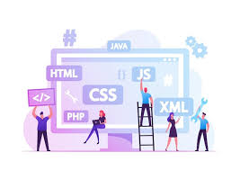
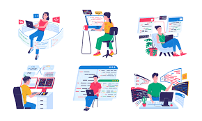

Front-End Vs Back-End
Web Technologies

Front-End
The front-end is the part of the website users can see and interact with such as the graphical user interface (GUI) and the command line including the design,menus and texts

Back-End
Backend Development encompasses server-side programming, database management, and application logic to ensure efficient web application functionality, utilizing various programming languages and frameworks while prioritizing security,scalability,user experience.